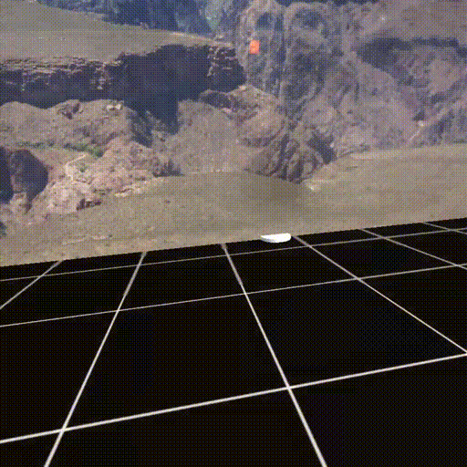

前後左右に移動する
相変わらずUnityでVRゲームを作っている。自分を前後左右に移動させるスクリプトの書き方を学んだ。

まず、一人称のプレイヤーを制御するにはCharacterControllerというコンポーネントを使う。これはRigidBodyのような物理特性を持たない、つまり重力のような力の影響を受けないけど、衝突判定を持ち、段差や斜面を移動できるような特性を持つ。
CharacterControllerコンポーネントを持つGame Objectに以下のようなスクリプトを追加する。
public class Walk : MonoBehaviour {
public float velocity = 1.0f;
private CharacterController controller;
void Start () {
controller = GetComponent ();
}
void Update () {
controller.SimpleMove (Camera.main.transform.forward * velocity);
}
}
Camera.main.transform.forwardでカメラが向いている方向を単位ベクトルとして取得できる。単位ベクトルとは、距離が1となるベクトルのこと。- 単位ベクトルに速度
velocityを掛けることで、移動先へのベクトル（向きと大きさ）が計算できる。 CharacterControllerのSimpleMove関数に移動先へのベクトルを渡すと、y軸（上下）方向を無視して移動させることができる。
Unityやっててだんだんわかってきたけど、ベクトル（Vector3）を使った計算が頻繁に必要になってくる。Unity側でやってくれる部分もあるけど、自分で実装しないといけない場面もけっこうあるんだな〜と思った。なので、ベクトルを使った計算や物理法則もゆっくり勉強していきたい。